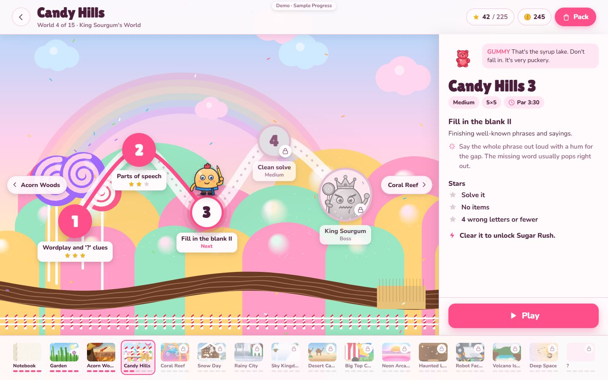
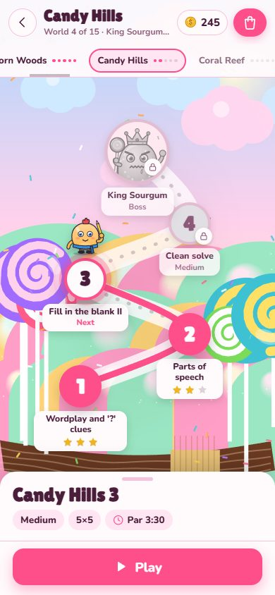

AWorld Stage My Pick
One world fills the screen, with its whole road across the middle. Pick a stop and its details fill the panel beside it. The worlds run along the bottom, each with its progress; the arrows, a swipe or the strip change world. The shop, skills, hero, book and help share one Pack.
- Best at
- Seeing a world at a glance, and moving fast between worlds.
- Trade-off
- No more scrolling through one long journey: each world is its own stage.

